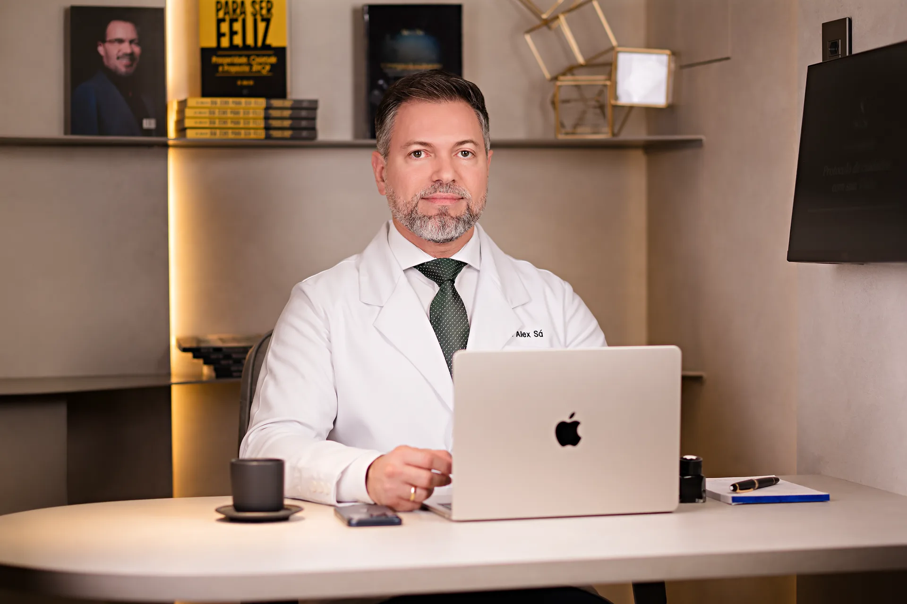
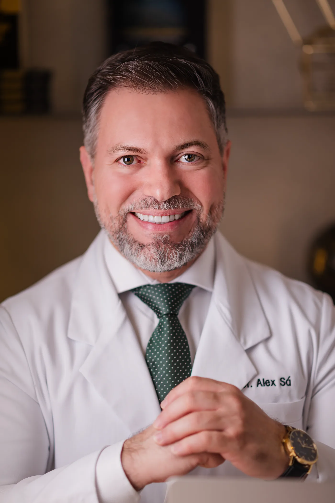
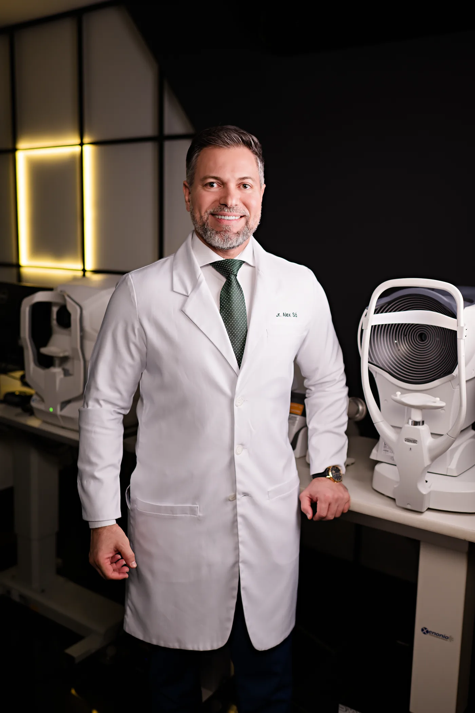

Feita para o cirurgião que não aceita evoluir na velocidade padrão.
Não é mais uma mentoria teórica. É volume cirúrgico real, com acompanhamento individual, para levar sua prática a um novo patamar de segurança e precisão.
Faz sentido aplicar se você
- É oftalmologista e quer acelerar sua evolução em cirurgia de catarata
- Busca volume de casos que a rotina da sua cidade não oferece
- Quer operar com um mentor ao lado, não assistir de longe
Não faz sentido se você
- Procura um curso gravado para assistir no tempo livre
- Não pode reservar cinco dias pra imersão presencial
- Prefere teoria a entrar no centro cirúrgico
- Não é médico oftalmologista
Alto volume, em regime de mutirão, com o mentor ao lado em cada caso.
A imersão é adaptada ao seu nível técnico e aos seus objetivos: do refinamento de quem já opera à construção de autonomia de quem está começando na faco.
Volume cirúrgico intenso
Você opera casos reais em sequência, dia após dia, em regime de mutirão. Volume que levaria meses para acumular na rotina, concentrado em uma semana.
Acompanhamento individual
O Dr. Alex acompanha cada caso ao seu lado: correção em tempo real, decisão discutida no momento em que ela acontece, evolução medida a cada dia.
Autonomia cirúrgica
O objetivo da semana: você sair conduzindo os próprios casos com mais segurança, precisão e critério de decisão.
Juruti
Oeste do Pará. Centro cirúrgico em regime de mutirão: alto volume de casos reais de catarata, operados em sequência.
Óbidos
Baixo Amazonas. Mesma estrutura de mutirão: a segunda turma do mês, com novos perfis de caso.
Sua turma acontece em uma das duas cidades. Reserve cinco dias na agenda: três de centro cirúrgico e dois de deslocamento até o interior do Pará.

Cirurgia se aprende operando. O resto é preparo para a próxima cirurgia.
Uma semana que reorganiza a sua técnica.
Cirurgia de catarata hands-on
Três dias operando com supervisão direta do Dr. Alex, do preparo do caso à revisão do que foi feito.
Refinamento técnico
Capsulorrexe ideal, posicionamento de LIO e manejo do SIA: o polimento que separa operar de operar bem.
Sistema de alto volume
Como um mutirão de alta performance é organizado, e o que essa lógica muda na sua rotina cirúrgica.
"Um dia aqui na mentoria valeu meses, anos, da minha trajetória."
O balanço de quem acabou de operar.
Gravado ao fim dos dias de mutirão, com o Dr. Alex perguntando e os mentorados respondendo. Vídeos legendados.
O balanço dos três dias, dito por quem acabou de sair do centro cirúrgico.
A dupla no centro cirúrgico: dois cirurgiões em momentos diferentes da curva, na mesma turma.
Quem já tem volume cirúrgico e veio de longe para refinar técnica e encarar casos complexos.
Depoimentos gravados durante as imersões cirúrgicas conduzidas pelo Dr. Alex Sá.

Mentoria de quem opera todos os dias.
Dr. Alex Sá (CRM-AM 7516 · RQE 3514) é cirurgião oftalmologista, especialista em catarata e cirurgia refrativa, professor por 6 anos na Universidade Federal do Amazonas e autor do livro "Cirurgia de Catarata: habilitando-se para o aprendizado".
Foi preceptor de residência em oftalmologia e de fellowship em catarata, e hoje lidera a própria clínica em Manaus, além de mentorar oftalmologistas de todo o Brasil no ecossistema OftalmoBlack.
Uma decisão de carreira.
O investimento e as condições são apresentados direto pela equipe, na conversa que segue a sua aplicação. Sem checkout, sem compra por impulso: entrada por análise.
Aplicar agoraPronto para a sua próxima turma?
São duas turmas por mês, com uma dupla em cada. A aplicação não é compromisso de compra: é o primeiro passo da conversa.

Sua aplicação foi aberta no WhatsApp da equipe. Confirme o envio da mensagem por lá e aguarde o retorno.
Prefere conversar antes? Falar com a equipe no WhatsApp.
Perguntas frequentes
Preciso já operar catarata para participar?
Não necessariamente. A imersão é personalizada ao seu nível técnico: quem já opera refina técnica e volume; quem está começando na faco constrói base com supervisão direta. O seu momento cirúrgico é avaliado na aplicação.
Como funciona a imersão?
Cada turma acontece em uma das duas cidades, Juruti ou Óbidos, no interior do Pará, em regime de mutirão: casos reais de catarata operados em sequência por três dias, com o Dr. Alex acompanhando cada caso. Reserve cinco dias na agenda: três de centro cirúrgico e dois de deslocamento. A agenda detalhada da turma é apresentada na conversa com a equipe.
Quantas vagas tem cada turma?
Cada turma é uma dupla de mentorados, e são duas turmas por mês, uma em cada cidade. O grupo mínimo é o que garante o mentor ao lado em cada caso.
A mentoria emite certificado?
Sim. Você recebe certificado de extensão universitária reconhecido pelo MEC.
Como garanto a minha vaga?
Envie a aplicação nesta página (ou chame a equipe no WhatsApp). O time retorna, entende seu momento e apresenta as condições. A vaga é reservada após essa conversa.
Duas cadeiras por turma. Uma pode ser sua.
Aplique agora e converse com a equipe sobre a próxima turma em Juruti ou Óbidos.